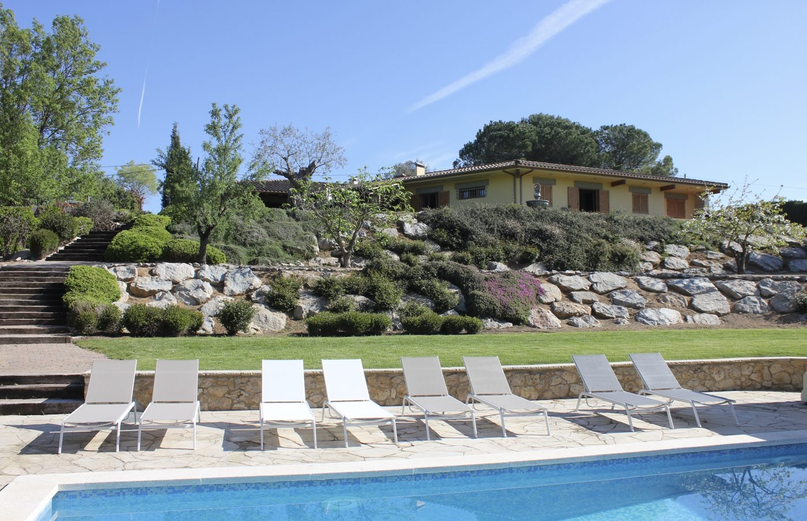

The weekend
Three days at the lake. One shared plan for the next 12 months.
The Cadence weekend brings four founding teams together at a lakehouse near Barcelona. No investors and no laptops open all day.
 Lake Banyoles, CataloniaFirst weekend · 15–18 April 2027
Lake Banyoles, CataloniaFirst weekend · 15–18 April 202701Why go away
The work that never fits in a Tuesday.
- Where are we going?
- Who owns what?
- How do we decide when we disagree?
Every founding team knows these questions matter. Three days away gives you the time for them.
02Who's there
Four founding teams, two hosts, the right experts.
4
Four founding teamsFrom different companies and funds, at a similar stage.
2
Your hostsRodin Affourtit, co-founder and co-CEO of a VC-backed company for seven years. Second host to confirm.
+
ExpertsFrom the Shadow Leaders network, on the problems your teams named.
0
No investorsNot yours, not anyone's.

The Lakehouse03Who it is for
A few teams a year, when the moment is right.
The weekend is for the one or two teams per fund who want to step back from everything at once: before a round, or after a hard year.
04The programme
The three days
Day 1
Arrive and see where you stand.
Your results, side by side. What you agree on and where you differ.
Day 2
Agree where you are going.
One picture of the next 12 months. Roles, ownership and how you decide.
Day 3
Make it real.
A 90-day plan with names and dates, and what you tell your team on Monday.
05The experience
Three days you will talk about for years.
The work is serious. Everything around it is exceptional.
 On the lake
On the lakeFind your cadence on the water.
A rowing session on Lake Banyoles. Two people, one boat, one rhythm.
A star dinner.
One evening at the table, with the other founding teams.
A private lakehouse, fully staffed.
Your own room, a private chef and a team that takes care of everything.
Out into the hills.
Because the best conversations happen while walking.
06What you leave with
You go home with three things.
1
One shared picture
of where the company is going in the next 12 months.
2
Clear roles and a way to decide
that you both agreed to.
3
A 90-day plan
you can share with your team.
07Before and after
You arrive prepared.
Each of you does your Check, and you have a 45-minute call together with your host, so the three days start where it matters.
It doesn't end on Sunday.
For the next year we stay in touch once a quarter. All included. Use what helps.
- Month 3
A call on your 90-day plan.
- Month 6
A reunion with the other three teams, online.
- Month 9
A call, and an expert if you need one.
- Month 12
Your quarterly check-in and a call: your year in review, and the next one.
Safe for both of you
What is said at the lake stays at the lake.
Your fund never sees your answers or what you discuss. This is not therapy or mediation.
Who pays
Your fund will likely help.
Show your fund you are interested: many are willing to pay half, and some pay all of it.
Common questions
Do we both have to come?
Yes. The weekend is for the founding team, not one founder.
We are three co-founders.
Welcome. Tell us and we will plan for it.
Is this a year-long programme?
No. You commit to three days. The calls afterwards are included, and you can skip or move any of them.
Do we have to share anything with our fund?
No. Nothing you say or answer goes to your investor.
When are the dates?
The first weekend is 15–18 April 2027. Tell us you are interested and we will share the next ones.
First weekend · 15–18 April 2027